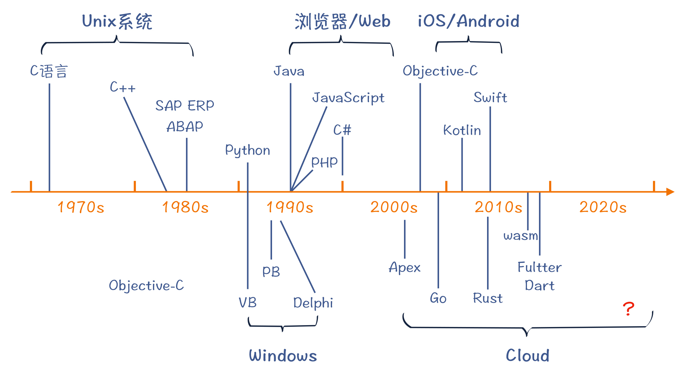

- 00 学习指南 如何学习这门编译原理实战课？.md.html
- 00 开篇词 在真实世界的编译器中游历.md.html
- 01 编译的全过程都悄悄做了哪些事情？.md.html
- 02 词法分析：用两种方式构造有限自动机.md.html
- 03 语法分析：两个基本功和两种算法思路.md.html
- 04 语义分析：让程序符合语义规则.md.html
- 05 运行时机制：程序如何运行，你有发言权.md.html
- 06 中间代码：不是只有一副面孔.md.html
- 07 代码优化：跟编译器做朋友，让你的代码飞起来.md.html
- 08 代码生成：如何实现机器相关的优化？.md.html
- 09 Java编译器（一）：手写的编译器有什么优势？.md.html
- 10 Java编译器（二）：语法分析之后，还要做些什么？.md.html
- 11 Java编译器（三）：属性分析和数据流分析.md.html
- 12 Java编译器（四）：去除语法糖和生成字节码.md.html
- 13 Java JIT编译器（一）：动手修改Graal编译器.md.html
- 14 Java JIT编译器（二）：Sea of Nodes为何如此强大？.md.html
- 15 Java JIT编译器（三）：探究内联和逃逸分析的算法原理.md.html
- 16 Java JIT编译器（四）：Graal的后端是如何工作的？.md.html
- 17 Python编译器（一）：如何用工具生成编译器？.md.html
- 18 Python编译器（二）：从AST到字节码.md.html
- 19 Python编译器（三）：运行时机制.md.html
- 20 JavaScript编译器（一）：V8的解析和编译过程.md.html
- 21 JavaScript编译器（二）：V8的解释器和优化编译器.md.html
- 22 Julia编译器（一）：如何让动态语言性能很高？.md.html
- 23 Julia编译器（二）：如何利用LLVM的优化和后端功能？.md.html
- 24 Go语言编译器：把它当作教科书吧.md.html
- 25 MySQL编译器（一）：解析一条SQL语句的执行过程.md.html
- 26 MySQL编译器（二）：编译技术如何帮你提升数据库性能？.md.html
- 27 课前导读：学习现代语言设计的正确姿势.md.html
- 28 前端总结：语言设计也有人机工程学.md.html
- 29 中端总结：不遗余力地进行代码优化.md.html
- 30 后端总结：充分发挥硬件的能力.md.html
- 31 运行时（一）：从0到语言级的虚拟化.md.html
- 32 运行时（二）：垃圾收集与语言的特性有关吗？.md.html
- 33 并发中的编译技术（一）：如何从语言层面支持线程？.md.html
- 34 并发中的编译技术（二）：如何从语言层面支持协程？.md.html
- 35 并发中的编译技术（三）：Erlang语言厉害在哪里？.md.html
- 36 高级特性（一）：揭秘元编程的实现机制.md.html
- 37 高级特性（二）：揭秘泛型编程的实现机制.md.html
- 38 综合实现（一）：如何实现面向对象编程？.md.html
- 39 综合实现（二）：如何实现函数式编程？.md.html
- 40 成果检验：方舟编译器的优势在哪里？.md.html
- 不定期加餐1 远程办公，需要你我具备什么样的素质？.md.html
- 不定期加餐2 学习技术的过程，其实是训练心理素质的过程.md.html
- 不定期加餐3 这几年，打动我的两本好书.md.html
- 不定期加餐4 从身边的牛人身上，我学到的一些优秀品质.md.html
- 不定期加餐5 借助实例，探究C++编译器的内部机制.md.html
- 划重点 7种编译器的核心概念与算法.md.html
- 期末答疑与总结 再次审视学习编译原理的作用.md.html
- 热点问题答疑 如何吃透7种真实的编译器？.md.html
- 用户故事 易昊：程序员不止有Bug和加班，还有诗和远方.md.html
- 知识地图 一起来复习编译技术核心概念与算法.md.html
- 结束语 实战是唯一标准！.md.html
- 捐赠
27 课前导读：学习现代语言设计的正确姿势
你好，我是宫文学。
到目前为止，你就已经学完了这门课程中前两个模块的所有内容了。在第一个模块“预备知识篇”，我带你梳理了编译原理的关键概念、算法等核心知识点，帮你建立了一个直观的编译原理基础知识体系；在第二个模块“真实编译器解析篇”，我带你探究了7个真实世界的编译器，让你对编译器所实际采用的各种编译技术都有所涉猎。那么在接下来的第三个模块，我会继续带你朝着提高编译原理实战能力的目标前进。这一次，我们从计算机语言设计的高度，来印证一下编译原理的核心知识点。
对于一门完整的语言来说，编译器只是其中的一部分。它通常还有两个重要的组成部分：一个是运行时，包括内存管理、并发机制、解释器等模块；还有一个是标准库，包含了一些标准的功能，如算术计算、字符串处理、文件读写，等等。
再进一步来看，我们在实现一门语言的时候，首先要做的，就是确定这门语言所要解决的问题是什么，也就是需求问题；其次，针对需要解决的问题，我们要选择合适的技术方案，而这些技术方案正是分别由编译器、运行时和标准库去实现的。
所以，从计算机语言设计的高度来印证编译原理知识，我们也能更容易理解编译器的任务，更容易理解它是如何跟运行时环境去做配合的，这也会让你进一步掌握编译技术。
好了，那接下来就一起来看看，到底用什么样的方式，我们才能真正理解计算机语言的设计思路。
首先，我们来聊一聊实现一门计算机语言的关键因素：需求和设计。
如何实现一门计算机语言？
我们学习编译原理的一个重要的目标，就是能够实现一门计算机语言。这种语言可能是你熟悉的某些高级语言，也可能是某个领域、为了解决某个具体问题而设计的DSL。就像我们在第二个模块中见到的SQL，以及编译器在内部实现时用到的一些DSL，如Graal生成LIR时的模式匹配规则、Python编译器中的ASDL解析器，还有Go语言编译器中IR的重写规则等。
那么要如何实现一门优秀的语言呢？我们都知道，要实现一个软件，有两个因素是最重要的，一个是需求，一个是设计。计算机语言作为一种软件，具有清晰的需求和良好的设计，当然也是至关重要的。
我先来说说需求问题，也就是计算机语言要解决的问题。
这里你要先明确一件事，如果需求不清晰、目标不明确，那么想要实现这门语言其实是很难成功的。通常来说，我们不能指望任何一种语言是全能的，让它擅长解决所有类型的问题。所以，每一门语言都有其所要解决的针对性问题。
举个例子，JavaScript如果单从设计的角度来看，有很多细节值得推敲，有不少的“坑”，比如null、undefined和NaN几个值就很令人困惑，你知道“null==undefined”的值是true还是false吗？但是它所能解决的问题也非常清晰，就是作为浏览器的脚本语言，提供Web的交互功能。在这个方面，它比同时期诞生的其他竞争技术，如ActiveX和Java Applet，都更具优势，所以它才能胜出。
历史上的计算机语言，都是像JavaScript那样，在满足了那个时代的某个需求以后而流行起来的。其中，根据“硅谷创业之父”保罗·格雷厄姆（Paul Graham）在《黑客与画家》中的说法，这些语言往往是一个流行的系统的脚本。比如说，C语言是Unix系统的脚本，COBOL是大型机的脚本，SQL是数据库系统的脚本，JavaScript、Java和C#都是浏览器的脚本，Swift和Objective-C是苹果系统的脚本，Kotlin是Android的脚本。让一门语言成为某个流行的技术系统的脚本，为这个生态提供编程支持，就是一种定位很清晰的需求。

好，明确了语言的需求以后，我们再来说说设计问题。
设计是实现计算机语言这种软件所要做的技术选择。你已经看到，我们研究的不同语言，其实现技术都各有特点，分别服务于该语言的需求问题，或者说设计目标。
我还是拿JavaScript来举例子。JavaScript被设计成了一门解释执行的语言，这样的话，它就能很方便地嵌入到HTML文本中，随着HTML下载和执行，并且支持不同的客户端操作系统和浏览器平台。而如果是需要静态编译的语言，就没有这么方便。
再进一步，由于HTML下载完毕后，JavaScript就要马上执行，从而也对JavaScript的编译速度有了更高的要求，所以我们才会看到V8里面的那些有利于快速解析的技术，比如通过查表做词法分析、懒解析等。
另外，因为JavaScript早期只是在浏览器里做一些比较简单的工作，所以它一开始没有设计并发计算的能力。还有，由于每个页面运行的JavaScript都是单独的，并且在页面退出时就可以收回内存，因此JavaScript的垃圾收集功能也不需要太复杂。
作为对比，Go语言的设计主要是用来编写服务端程序的，那么它的关键特性也是与这个定位相适应。
- 并发：服务端的软件最重要的一项能力就是支持大量并发任务。Go在语言设计上把并发能力作为第一等级的语言要素。
- 垃圾收集：由于垃圾收集会造成整个应用程序停下来，所以Go语言特别重视降低由于垃圾收集而产生的停顿。
那么总结起来，我们要想成功地实现一门语言，要把握两个要点：第一，要弄清楚该语言的需求，也就是它要去解决的问题；第二，要确定合适的技术方案，来更好地解决它要面对的问题。
计算机语言的设计会涉及到比较多的内容，为了防止你在学习时抓不到重点，我在第三个模块里，挑了一些重点的内容来做讲解，比如前面提到的垃圾收集的特性等。我会以第二个模块所研究的多门语言和编译器作为素材，一起探讨一下，各门语言都是采用了什么样的技术方案来满足各自的设计目标的，从而让你对计算机语言设计所考虑的因素、编译技术如何跟其他相关技术打配合，形成一个宏观的认识。
“现代语言设计篇”都会讲哪些内容？
这个模块的内容，我根据计算机语言的组成和设计中的关键点，将其分成了三个部分。
第一部分，是对各门语言的编译器的前端、中端和后端技术做一下对比和总结。
这样，通过梳理和总结，我们就可以找出各种编译器之间的异同点。对于其共同的部分，我们可以看作是一些最佳实践，你在自己的项目中可以大胆地采用；而有差异的部分，则往往是某种编译器为了实现该语言的设计目标而采用的技术策略，你可以去体会各门语言是如何做取舍的，这样也能变成你自己的经验储备。
第二部分，主要是对语言的运行时和标准库的实现技术做一个解析。
我们说过，一门语言要包括编译器、运行时和标准库。在学习第二个模块的时候，你应该已经有了一些体会，你能发现编译器的很多特性是跟语言的运行时密切相关的。比如，Python有自己独特的对象体系的设计，那么Python的字节码就体现了对这些对象的操作，字节码中的操作数都是对象的引用。
那么在这一部分，我就分为了几个话题来进行讲解：
- 第一，是对语言的运行时和标准库的宏观探讨。我们一起来看看不同的语言的运行时和它的编译器之间是如何互相影响的。另外，我还会和你探讨语言的基础功能和标准库的实现策略，这是非常值得探讨的知识点，它让一门语言具备了真正的实用价值。
- 第二，是垃圾收集机制。本课程分析、涉及的几种语言，它们所采用的垃圾收集机制都各不相同。那么，为什么一门语言会选择这个机制，而另一种语言会选择另一种机制呢？带着这样的问题所做的分析，会让你把垃圾收集方面的原理落到实践中去。
- 第三，是并发模型。对并发的支持，对现代语言来说也越来越重要。在后面的课程中，我会带你了解线程、协程、Actor三种并发模式，理解它们的优缺点，同时你也会了解到，如何在编译器和运行时中支持这些并发特性。
第三部分，是计算机语言设计上的4个高级话题。
第一，是元编程技术。元编程技术是一种对语言做扩展的技术，相当于能够定制一门语言，从而更好地解决特定领域的问题。Java语言的注解功能、Python的对象体系的设计，都体现了元编程功能。而Julia语言，更是集成了Lisp语言在元编程方面的强大能力。因此我会带你了解一下这些元编程技术的具体实现机制和特点，便于你去采纳和做好取舍。
第二，是泛型编程技术。泛型，或者说参数化类型，大大增强了现代语言的类型体系，使得很多计算逻辑的表达变得更简洁。最典型的应用就是容器类型，比如列表、树什么的，采用泛型技术实现的容器类型，能够方便地保存各种数据类型。像Java、C++和Julia等语言都支持泛型机制，但它们各自实现的技术又有所不同。我会带你了解这些不同实现技术背后的原因，以及各自的特点。
第三，是面向对象语言的实现机制。面向对象特性是当前很多主流语言都支持的特性。那么要在编译器和运行时上做哪些工作，来支持面向对象的特性呢？对象在内存里的表示都有哪些不同的方式？如何实现继承和多态的特性？为什么Java支持基础数据类型和对象类型，而有些语言中所有的数据都是对象？要在编译技术上做哪些工作来支持纯面向对象特性？这些问题，我会花一讲的时间来带你分析清楚，让你理解面向对象语言的底层机制。
第四，是函数式编程语言的实现机制。函数式编程这个范式出现得很早，不少人可能不太了解或者不太关注它，但最近几年出现了复兴的趋势。像Java等面向对象语言，也开始加入对函数式编程机制的支持。在第三个模块中，我会带你分析函数式编程的关键特征，比如函数作为一等公民、不变性等，并会一起探讨函数式编程语言实现上的一些关键技术，比如函数类型的内部表示、针对函数式编程特有的优化算法等，让你真正理解函数式编程语言的底层机制。
该模块的最后一讲，也是本课程的最后一讲，是对我们所学知识的一个综合检验。这个检验的题目，就是解析方舟编译器。
方舟编译器，应该是第一个引起国内IT界广泛关注的编译器。俗话说，外行看热闹，内行看门道。做一个编译器，到底有哪些关键的技术点？它们在方舟编译器里是如何体现的？我们在学习了编译原理的核心基础知识，在考察了多个编译器之后，应该能够有一定的能力去考察方舟编译器了。这也是学以致用、紧密结合实际的表现。通过这样的分析，你能了解到中国编译技术崛起的趋势，甚至还可能会思考如何参与到这个趋势中来。这一讲，我希望同学们都能发表自己的看法，而我的看法呢，只是一家之言，你作为参考就好了。
小结
总结一下。咱们课程的名称是《编译原理实战课》，而最体现实战精神的，莫过于去实现一门计算机语言了。而在第三个模块，我就会带你解析实现一门计算机语言所要考虑的那些关键技术，并且通过学习，你也能够根据语言的设计目标来选择合适的技术方案。
从计算机语言设计的高度出发，这个模块会带你对编译原理形成更全面的认知，从而提高你把编译原理用于实战的能力。
© 2019 - 2023 Liangliang Lee. Powered by gin and hexo-theme-book.